2026.10.5 更新
1997.1.1開設
Explore
こどもの不整脈専門医・
鈴木嗣敏の活動の記録
新聞・テレビ報道、学会･講演の仕事、論文･原稿の仕事、アブレーション治療の仕事をまとめました。

Milestones
小児不整脈専門の医師
小児カテーテルアブレーション
治療を専門とする医師としての
これまでの歩み
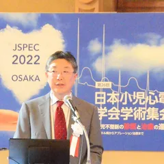
- 研究
アブレーション1000件の論文がHeart Rhythmに掲載
2006年の転勤から12年で小児不整脈科のアブレーション件数が1000件を超えたのを記念して、シニアレジデントの加藤有子先生にまとめてもらった論文が、Heart Rhythm（アメリカ不整脈学会雑誌）に掲載されました。
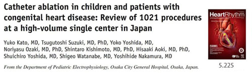
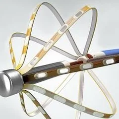
診療3Dマッピングシステム「リズミア（Rhythmia）」を導入
アブレーション治療用の最新の3D mappingシステムで、さらに高精度での治療が可能になりました。
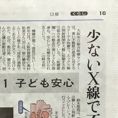
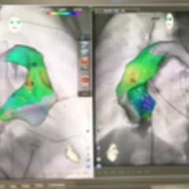
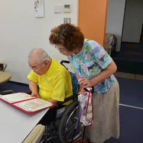
研究束枝心室副伝導路の鑑別診断の論文で医学博士の学位を取得
3つの論文のうちの一つ、束枝心室副伝導路の鑑別診断の論文で医学博士の学位を取得させていただきました。家族や両親がとても喜んでくれてうれしかったです。
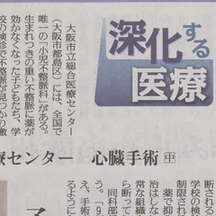
- 研究
Heart Rhythmに2本、Circulation Journalに1本の論文が採択
英文の医学論文3つがacceptされた充実した年でした。
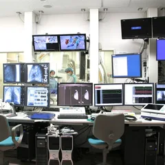
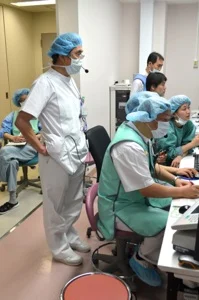
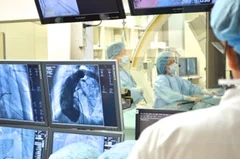
診療日本初の「小児不整脈科」が設立
日赤和歌山医療センターから
中村好秀先生をお迎えして設立されました。- 経歴
東京女子医科大学から大阪市立総合医療センターへ
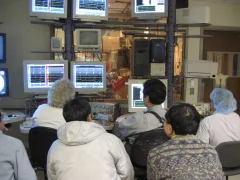
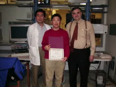
経歴アメリカのオクラホマ大学に短期研修
アブレーションの最新の世界を経験させていただきました。10日間でしたが人との出会いも含めて貴重な経験でした。
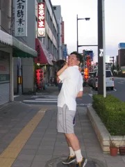
経歴日赤和歌山医療センターで
小児アブレーションの世界へ小児科医師になって11年目、人生の大きな転機でした。
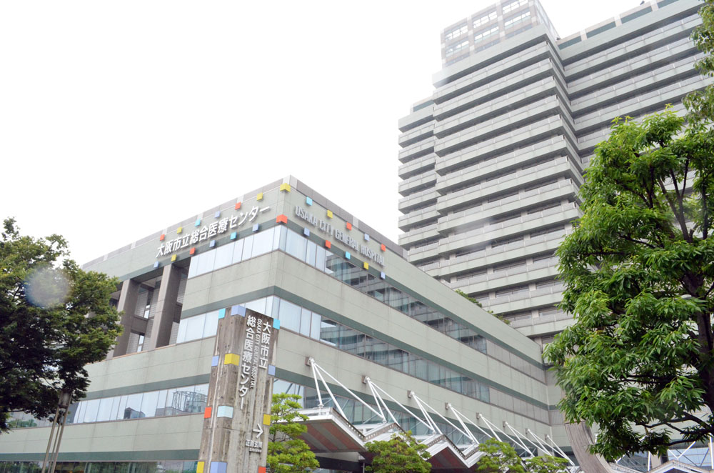
Hospital
大阪市立総合医療センター
小児循環器・不整脈内科
- 病院の小児循環器・不整脈内科紹介ページ
- 入院・宿泊施設案内大阪市立総合医療センター入院案内・ペアレンツハウス大阪案内（2021/1/6 update）
- 「カテ室五番」の紹介アブレーション治療専用のカテーテル検査室
Resources
資料・アプリ
患者さんとご家族、医療者に向けて公開している資料とアプリです。
カテのアンギオ画像合成ツール
カテ位置のRAO・LAO透視画像を合成するhtml版・mac版アプリです。html版はWindowsでも使えますが保存先を指定できません。mac版は保存先を指定できます。
Personal
ちょっと個人的なこと
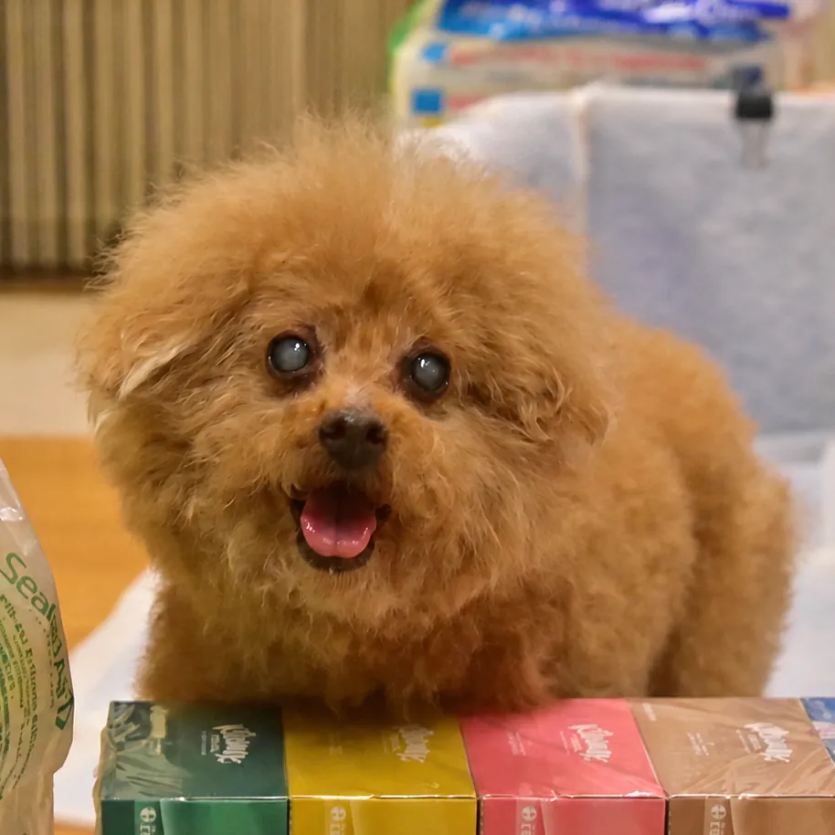
2026.9.26 大阪市中央公会堂で、17歳の長寿のお祝いをしていただきました．
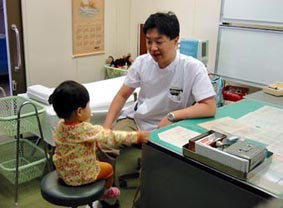
う〜ん 何度読んでも，すばらしい詩です．
母親譲りの才能だそうです (おやばか．．．)
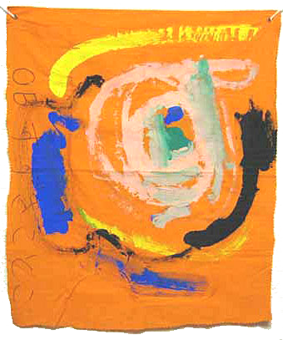